[sajŋ˧ | san˧] ; xanh

Le mot "xanh" en vietnamien présente une polysémie particulièrement intéressante qui englobe à la fois le vert et le bleu dans la perception des couleurs. Cette particularité linguistique reflète une organisation conceptuelle différente du spectre chromatique par rapport aux langues européennes. Dans son sens prototypique, "xanh" désigne principalement la couleur verte associée à la nature, la végétation luxuriante du Vietnam tropical. Cette association forte avec le monde végétal fait de "xanh" un terme central pour décrire la nature environnante : "xanh tươi" (vert frais), "xanh um" (vert luxuriant).
Par extension métonymique, "xanh" en vient à symboliser la jeunesse, la vitalité et la fraîcheur, comme dans l'expression "tuổi xanh" (âge vert, jeunesse). Cette dimension métaphorique se retrouve également dans des contextes où "xanh" évoque la nouveauté, l'inexpérience ou l'immaturité. La polysémie s'enrichit encore avec l'usage de "xanh" pour désigner le bleu, notamment "xanh da trời" (bleu ciel) ou "xanh dương" (bleu océan), montrant une conception fluide des frontières chromatiques entre vert et bleu.
Dans le contexte contemporain vietnamien, "xanh" acquiert également une dimension écologique et environnementale. Les expressions comme "kinh tế xanh" (économie verte) ou "năng lượng xanh" (énergies vertes) témoignent de l'adoption des concepts environnementaux modernes. Cette évolution sémantique illustre comment un terme traditionnel s'adapte aux nouveaux enjeux sociétaux tout en conservant ses racines culturelles profondes liées à la relation harmonieuse avec la nature, valeur fondamentale de la culture vietnamienne.